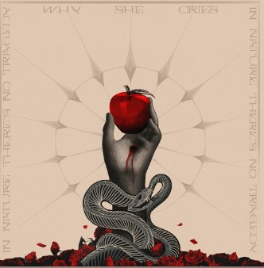

The set is a service.
Ninety minutes, one hardware rig, no risers. Lit from below in oxblood and gold. She plays seated. The crowd may dance, but she does not signal them.

A producer working at the seam between sacred and synthetic — alternative techno scored for the hours when the body keeps moving but the mind has already left the room.
Not genre — gesture. Three movements that recur across every release, every set, every live edit.
Down-tempo, 118–124 BPM. Bass that walks rather than punches. Built for the long approach — the hour before the floor breaks.
Sampled choir, field-recorded Mass, processed Latin. A vocal language that sounds remembered, never invented — even when it is.
Distortion as catharsis. When the kick finally lands, it doesn't drop — it confesses. Closing track territory; rarely premiered before 4 am.
The closest thing techno has produced to a requiem mass — heavy, patient, and not interested in your comfort.The Wire — November 2024
A set that felt less like a performance than a long, dignified argument with God.Resident Advisor — Berghain Review, 2025
Saint Hours is the rarest kind of debut: an album that arrives fully grown, already at peace with what it is.Pitchfork — 8.4 / Best New Music
She is building a new vocabulary for the after-hours — slower, sadder, and unmistakably hers.Crack Magazine — Cover Feature, Spring '26
Ninety minutes, one hardware rig, no risers. Lit from below in oxblood and gold. She plays seated. The crowd may dance, but she does not signal them.
No LED walls. No timecode. The room is the visual — masked attendants at the wings, oxblood gel washes, a single tungsten spot on the rig. Smoke is mandatory.
"In nature— WhySheCries, in conversation with The Wire, 2024
there's no
tragedy."